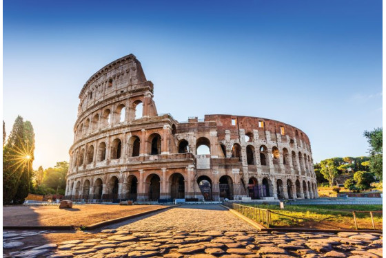

The Most top five Best Places In The Italy
Vencie Canals

Location: Venice.
Best Time to Visit: April-June or September-October.
Info: A romantic destination known for its gondola rides and beautiful waterways.
Rome Colosseum

Location: Rome.
Best Time to Visit: April-June or September-October.
Info: An ancient amphitheater that hosted gladiatorial contests and public spectacles.
Florence Uffizi Gallery

Location:Near to Bellosguardo
Best Time to Visit:lace and prominent art museum located adjacent to the piazza della signoria in the Historic centre of florence in the region of Tuscany
Amalafi Coast

Location: Southern Italy.
Best Time to Visit: May-September.
Info: A picturesque coastline with colorful villages, crystal-clear waters, and scenic drives.
Cinque Terre

Location:liguria,italy
CBest Time to Visit:ing of the centuries old seaside villages on the ruggged italian Riviera coastline